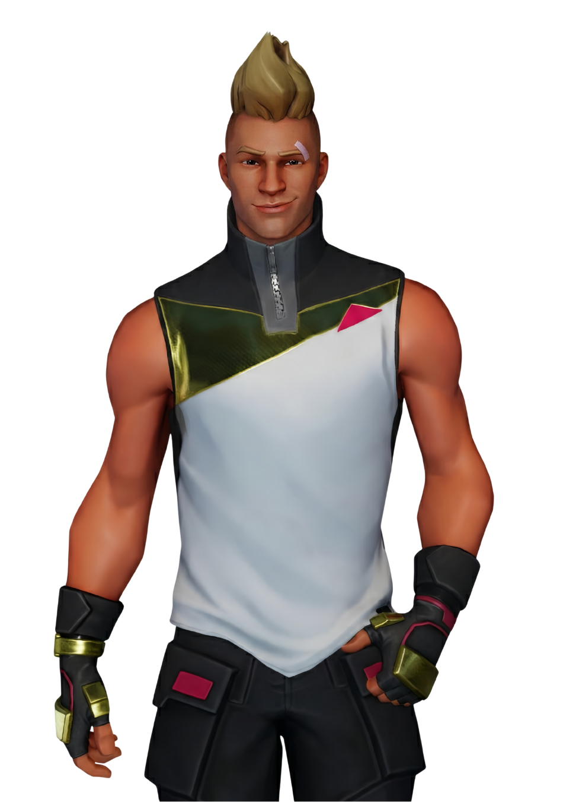
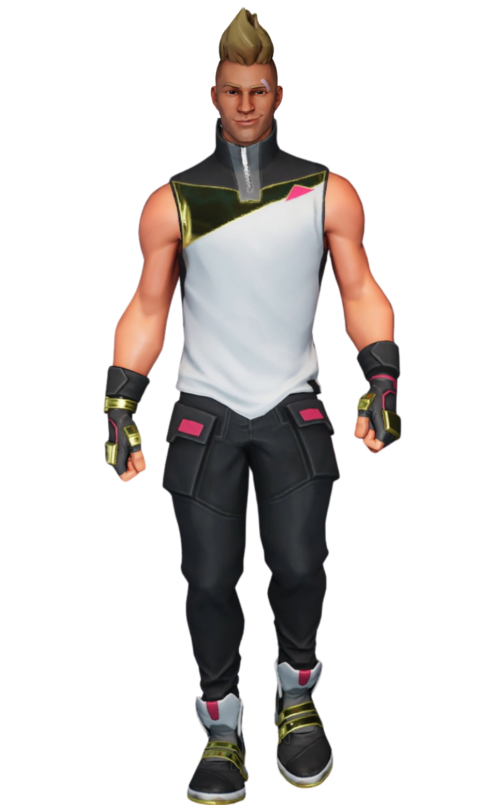

Denver
// Archives Biographiques
Le Fantôme de Tilted
Frère jumeau de Lucie, Denver était une figure silencieuse et bienveillante de Tilted Towers, reconnaissable à sa crête blonde. Sa vie a dramatiquement basculé lors de l'éruption volcanique dévastatrice provoquée par le Maître du Feu. Séparé du groupe dans le chaos et l'effondrement de leur immeuble, il a mystérieusement disparu. Introuvable dans les cendres de la capitale, son sort funeste reste incertain, laissant une plaie à vif chez sa sœur Lucie qui refuse obstinément de le croire mort et garde l'espoir de le retrouver.
// Variantes Visuelles
